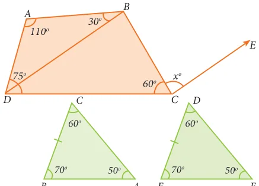

- Draw a right triangle whose hypotenuse is 10 cm and one of the legs is 8 cm. Locate its incentre and also draw the incircle.
- Draw DABC given \(AB = 9\) cm, \(\angle CAB = 115 ^{\circ}\) and \(\triangle ABC = 40 ^{\circ}\) . Locatge its incentre and also draw the incircle. (Note: You can check from the above examples that the incentre of any triangle is always in its interior).
- Construct DABC in which \(AB = BC = 6cm\) and \(\angle B = 80 ^{\circ}\) . Locate its incentre and
draw the incircle.


Multiple Choice Questions
- The exterior angle of a triangle is equal to the sum of two
(1) Exterior angles (2) Interior opposite angles (3) Alternate angles (4) Interior angles
\(AD = DC\) Measure of BCD is \((1) 150 ^{\circ} \angle (2) 30 ^{\circ} (3) 105 ^{\circ} (4) 72 ^{\circ}\)
- In the quadrilateral ABCD, \(AB = BC\) and

- ABCD is a square, diagonals AC and BD meet at O. The number of pairs of congruent triangles with vertex O are (1) 6 (2) 8 (3) 4 (4) 12
- In the given figure CE || DB then the value of x is

\((1) 45 ^{\circ} (2) 30 ^{\circ} (3) 75 ^{\circ} (4) 85 ^{\circ}\)
- The correct statement out of the following is
(1) ΔABC , ΔDEF (2) ΔABC , ΔDEF
(3) ΔABC , ΔFDE (4) ΔABC , ΔFED
- If the diagonal of a rhombus are equal, then the rhombus is a
(1) Parallelogram but not a rectangle (2) Rectangle but not a square (3) Square (4) Parallelogram but not a square
\((1) C + D \angle \angle (2) \frac{1}{2}\) \(C +\) D) \(\angle\)
\((3) \frac{1}{2} \angle +C + \angle \frac{1}{3} +D (4) \frac{1}{3} + \angle C + \frac{1}{2} \angle +D\)
- If bisectors of A and B of a quadrilateral ABCD meet at O, then AOB is
- The interior angle made by the side in a parallelogram is \(90 ^{\circ}\) then the parallelogram is a (1) rhombus (2) rectangle (3) trapezium (4) kite
- Which of the following statement is correct? (1) Opposite angles of a parallelogram are not equal. (2) Adjacent angles of a parallelogram are complementary. (3) Diagonals of a parallelogram are always equal. (4) Both pairs of opposite sides of a parallelogram are always equal.
- The angles of the triangle are \(3x - 40\), x+20 and \(2x - 10\) then the value of x is \((1) 40 ^{\circ} (2) 35 ^{\circ} (3) 50 ^{\circ} (4) 45 ^{\circ}\)
- PQ and RS are two equal chords of a circle with centre O such that \(\angle POQ = 70 ^{\circ}\) ,
then \(\angle ORS =\)
\((1) 60 ^{\circ} (2) 70 ^{\circ} (3) 55 ^{\circ} (4) 80 ^{\circ}\)
- A chord is at a distance of 15cm from the centre of the circle of radius 25cm. The
length of the chord is (1) 25cm (2) 20cm (3) 40cm (4) 18cm

- In the figure, O is the centre of the circle and
\(\angle ACB= 40 ^{\circ}\) then \(\angle AOB =\)
\((1) 80 ^{\circ} (2) 85 ^{\circ} (3) 70 ^{\circ} (4) ^{\circ}\)
- In a cyclic quadrilaterals ABCD, \(\angle A = 4x\), \(\angle C = 2x\) the value of x is

\((1) 30 ^{\circ} (2) 20 ^{\circ} (3) 15 ^{\circ}\)
- In the figure, O is the centre of a circle and diameter AB the chord CD at a point E such that CE=ED=8 cm and EB The radius of the circle is (1) 8cm (2) 4cm (3) 6cm (4)10cm
- In the figure, PQRS and PTVS are two cyclic
quadrilaterals, If \(\angle QRS=100 ^{\circ}\) , then \(\angle TVS =\)
\((1) 80 ^{\circ} (2) 100 ^{\circ} (3) 70 ^{\circ} (4) 90 ^{\circ}\)
- If one angle of a cyclic quadrilateral is \(75 ^{\circ}\) , then the
opposite angle is
\((1) 100 ^{\circ} (2) 105 ^{\circ} (3) 85 ^{\circ} (4) 90 ^{\circ}\)
- In the figure, ABCD is a cyclic quadrilateral in which

DC produced to E and CF is drawn parallel to AB such that \(\angle ADC = 80 ^{\circ}\) and \(\angle ECF = 20 ^{\circ}\) , then \(\angle BAD =\) ?
\((1) 100 ^{\circ} (2) 20 ^{\circ} (3) 120 ^{\circ} (4) 110 ^{\circ}\)
- AD is a diameter of a circle and AB is a chord If
\(AD = 30\) cm and \(AB = 24cm\) then the distance of AB from the centre of the circle is (1) 10cm (2) 9cm (3) 8cm (4) 6cm.

- In the given figure, If \(OP = 17cm\), \(PQ = 30cm\) and OS is
perpendicular to PQ , then RS is (1) 10cm (2) 6cm (3) 7cm (4) 9cm.